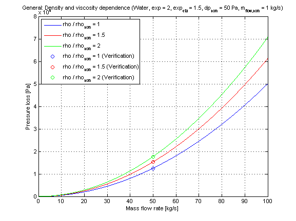
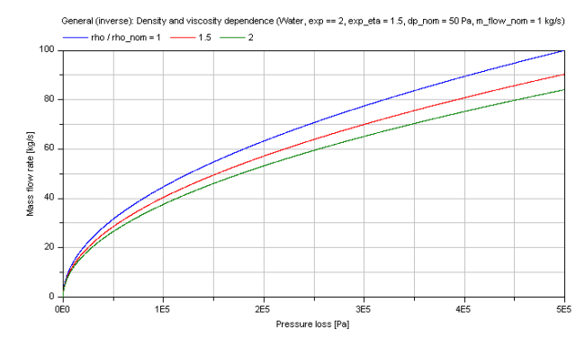

dp_nominalDensityViscosity |
|
Information
This information is part of the Modelica Standard Library maintained by the Modelica Association.
Calculation of a generic pressure loss in dependence of nominal fluid variables (e.g., nominal density, nominal dynamic viscosity) at an operation point via interpolation. This generic function considers the pressure loss law via a pressure loss exponent and the influence of density and dynamic viscosity on pressure loss.
Calculation
The geometry parameters of energy devices necessary for the pressure loss calculations are often not exactly known. Therefore the modelling of the detailed pressure loss calculation has to be simplified. This function uses nominal variables (e.g., nominal pressure loss) at a known operation point of the energy device to interpolate the actual pressure loss according to a pressure loss law (exponent).
The generic pressure loss dp is determined for:
-
compressible case [Mass flow rate = f(dp)]:
m_flow = m_flow_nom*[(dp/dp_nom)*(rho/rho_nom)]^(1/exp)*(eta_nom/eta)^(exp_eta/exp)
-
incompressible case [Pressure loss = f(m_flow)]:
dp = dp_nom*(m_flow/m_flow_nom)^exp*(rho_nom/rho)*(eta/eta_nom)^exp_eta
with
| dp | as pressure loss [Pa], |
| dp_nom | as nominal pressure loss [Pa], |
| eta | as dynamic viscosity of fluid [kg/(ms)]. |
| eta_nom | as nominal dynamic viscosity of fluid [kg/(ms)]. |
| m_flow | as mass flow rate [kg/s], |
| m_flow_nom | as nominal mass flow rate [kg/s], |
| exp | as exponent of pressure loss calculation [-], |
| exp_eta | as exponent of dynamic viscosity dependence [-], |
| rho | as fluid density [kg/m3], |
| rho_nom | as nominal fluid density [kg/m3]. |
To avoid numerical difficulties this pressure loss function is linear smoothed for
-
small mass flow rates, where
m_flow ≤ (0.01*rho/rho_nom*(1/eta*eta_nom)^(exp_eta))^(1/exp) and - small pressure losses, where
dp ≤ 0.01*dp_nom)
Note that the density (rho) and dynamic viscosity (eta) of the fluid are defined through the definition of the kinematic viscosity (nue).
nue = eta / rho
Therefore if you set both the exponent of dynamic viscosity (exp_eta == 1) and additionally a relation of density and dynamic viscosity there will be no difference for varying densities because the dynamic viscosities will vary in the same manner.
Verification
Incompressible case [Pressure loss = f(m_flow)]:
The generic pressure loss DP in dependence of the mass flow rate m_flow with different fluid densities and dynamic viscosity dependence as parameters is shown for a turbulent pressure loss regime (exp == 2) in the figure below.

Compressible case [Mass flow rate = f(dp)]:
The generic mass flow rate M_FLOW in dependence of the pressure loss dp at different fluid densities and dynamic viscosity as parameters is shown for a turbulent pressure loss regime (exp == 2) in the figure below.

References
- Elmqvist, H., M.Otter and S.E. Cellier:
- Inline integration: A new mixed symbolic / numeric approach for solving differential-algebraic equation systems.. In Proceedings of European Simulation MultiConference, Praque, 1995.
- Wischhusen, S.:
- Dynamische Simulation zur wirtschaftlichen Bewertung von komplexen Energiesystemen.. PhD thesis, Technische Universität Hamburg-Harburg, 2005.